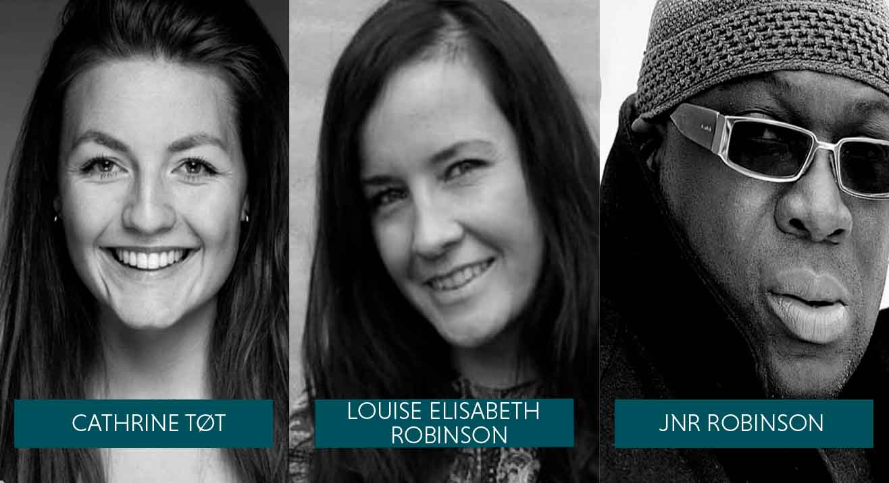
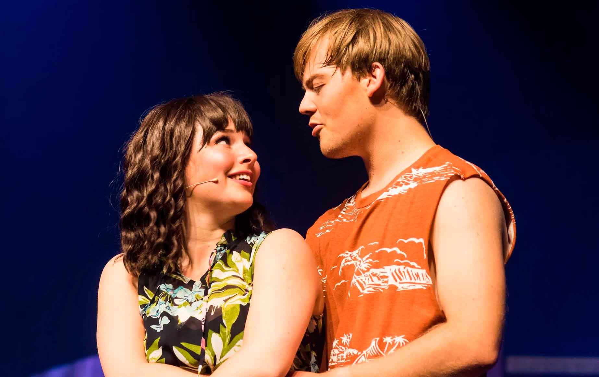
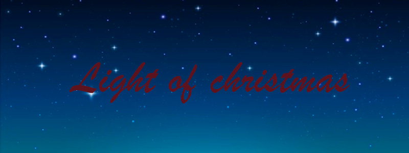

Horsens Musical Teater
præsenterer årets muscial 2022 - GREASE
En sommerflirt mellem Danny Zuko og den søde australske Sandy, bliver brudt op ved feriens afslutning.
Tilbage på Rydell High mødes de igen, til begges store overraskelse.
I stedet for at rejse tilbage til Australien, skal Sandy studere på netop Rydell High,
hvor hun prøver at finde sin plads i pigegruppen Pink Ladies.
Danny prøver desperat at opretholde den hårde facade i den populære drengegruppe T-birds,
hvilket ikke stemmer overens med den følsomme Danny, som Sandy blev forelsket i.
Grease er en romantisk komedie musical, fyldt med fantastiske koreografier,
storslåede sange og smukke farverige kostumer, fra en tid, hvor håret er slikket tilbage
og dansetrinene var bedst..

Kreativ ledelse

Vi kan med stolthed præsenterer vores kreative ledelse for dette års musical: GREASE.
Instruktør: Louise Elisabeth Robinson har siden 2013 arbejdet professionelt som instruktør på musicals i Horsens og i Mariager.
Hun har også undervist i improteater de sidste 13 år.
Koregraf: Cathrine Tøt er uddannet danser på International Dance Acadamy i 2014 (København og L.A.).
Derudover har hun studeret på Københavns film- og teaterskole.
Hun har koreograferet forstillinger siden hun var 18 år.
Vocal-coach: JNR Robinson er professionel sanger, vocal-coach og korleder.
Han rejser rundt i hele europa, hvor han optræder som solist og underviser i kor såvel som solo.
Han har optrådt for intet mindre end to paver: Pave John Paul II og Pave Francesco på Verticanen.
Tidligere forstillinger
High School Musical 2
I juli 2021 opførte vi ungdomsmusicalen “High School Musical 2”
som er en fortsættelse af historien om basketballstjernen Troy og superhjernen Gabriella,
og deres kamp for at bryde med normerne og finde sig selv.
Det er sommerferie og Troy Bolton og hans venner leder efter et sommerjob. '
De får et job ved Lava Springs Country Club, som Sharpay og Ryans forældre ejer.
Deres sommer bliver på ingen måde, som de i første omgang drømte om,
da den evige kamp mellem Sharpay og Gabriella om Troy Bolton fortsætter...
High school musical 2 er en pumpende energisk musical med medrivende musik.
Den har været opført en gang i Danmark på Fredericia teater og nu mener Horsens Musical Teater,
at det er på tide, den igen får liv på den danske Musicalscene.
Forstillingen blev opført på Horsens Ny Teater den 2., 3. og 4. Juli 2021
Køb billet
Juleshow: Light of christmas - Torsdag d. 16/12/21 20:00
Køb din billet her